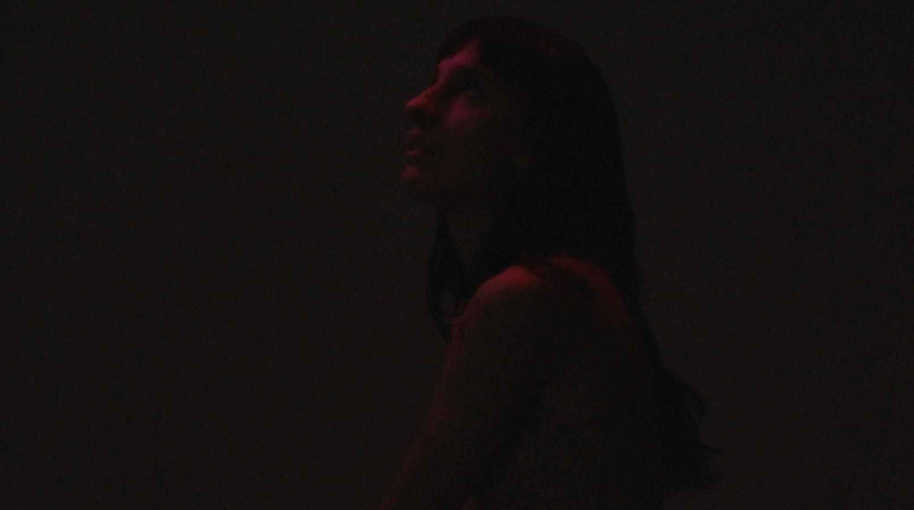
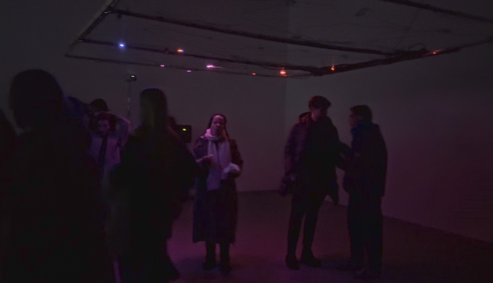
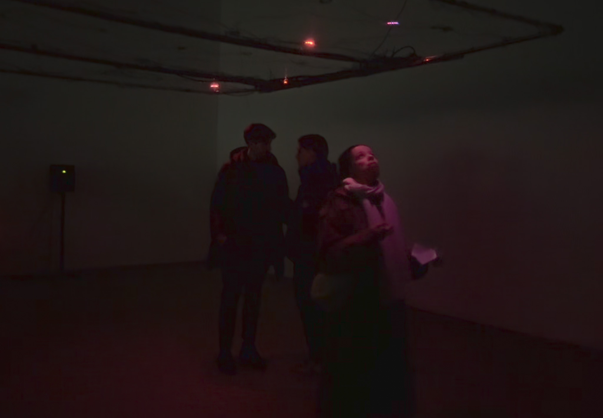
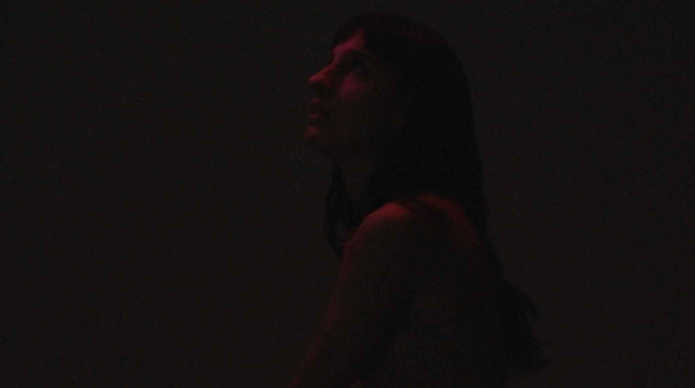
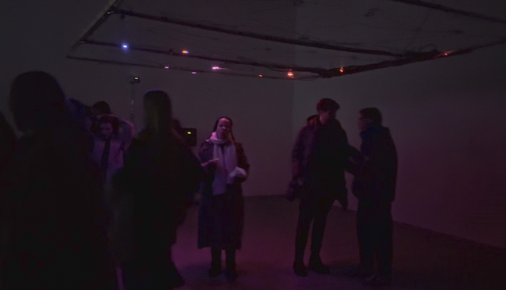
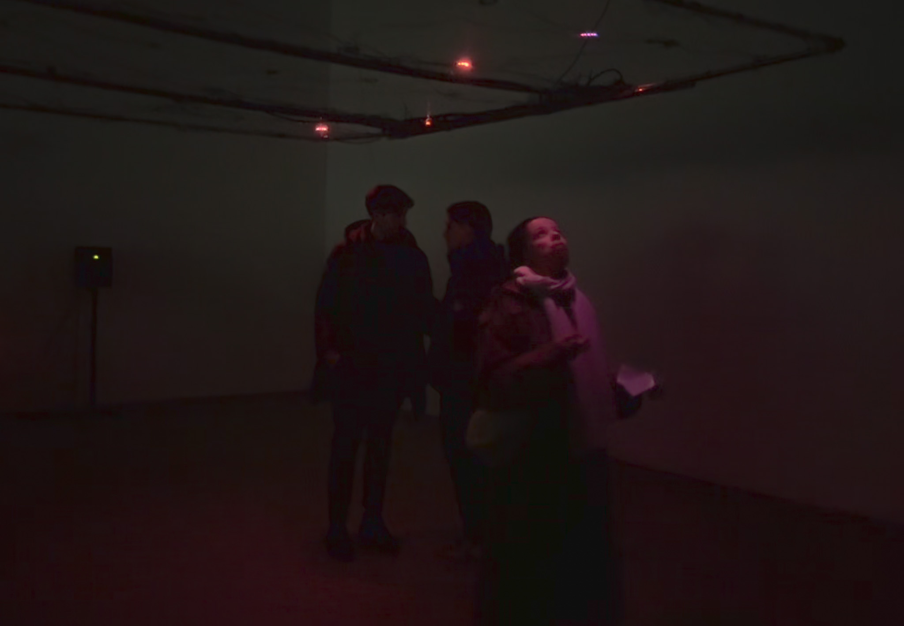

My bachelor thesis explores the interplay between reflection as both a physical phenomenon and a metaphor for self-perception. The work combines concepts from physics, psychology, and digital media to create an immersive performance environment in which light, sound, and movement interact dynamically. At the heart of the installation is a suspended light grid that responds in real time to visitors’ positions, captured through Kinect tracking, and is synchronized with sound textures ranging from deep bass to delicate highs. These audiovisual interactions shape shifting atmospheres and invite the audience to actively participate in the experience. Through a choreographed dance performance, the abstract themes of reflection and perception are embodied and transformed into visible, tangible movements. The result is a multisensory environment where artistic expression and scientific principles converge, encouraging viewers to reflect on their own perception and emotional resonance within the space.
Concept, Direction, Visual Design
Tools: TouchDesigner, Kinect
 




